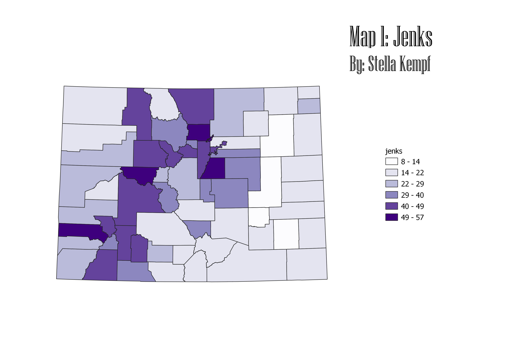
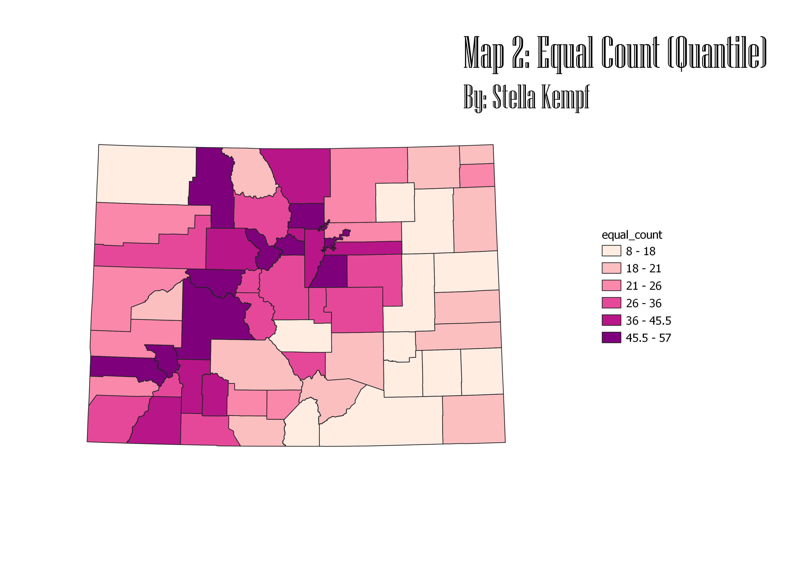
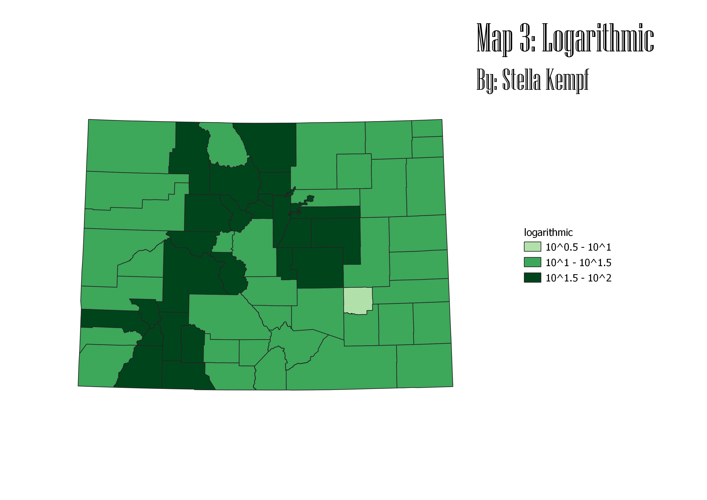

Homework 8: Census data ratios and categories
Stella Kempf
The ratio that I chose to do for this assignment was deg/tot_21, or the number of people that have a
bachelors degree in Colorado divided by the total number of people over the age of 21 in Colorado. I
chose to do my ratio this way because because almost no one under the age of 21 is old enough to have
graduated college with a bachelors degree, so creating the ratio with only the total population over
21 gives us a more accurate representation of the number of adults in Colorado with a degree. Additionally,
after I divided the total number of degree holders by the total population over 21, I multiplied the
ratio by 100 so the resulting choreopleth numbers would be larger and produce more visible diversity.
For my first map I used the jenks categorization for the choreopleth. The jenks type of classification
focuses on natural breaks in the data to form different sets of values. The pros of using jenks is that
it is good for mapping unequal distributions of data since it can create its own breaks. The cons of
using jenks is that it is hard to choose the correct number of breaks for a data set. In this case, I
chose six because there are 64 counties in Colorado.

For my second map I used the equal counts (quantile) categorization for the choreopleth. The equal breaks
type of classification means that each set of breaks contains the same number of values. The pros of using
equal counts is that it produces fairly distributed data because of the equal number of values. The cons of
equal counts is that sometimes values that are similar can end up in different sets because they just missed
the cutoff for the equal values.

For my third map I used the logarithmic categorization for the choreopleth. The logarithmic type of classification
creates breaks based on log functions done by QGIS. This type of categorization is not very commonly used.
The pros for logarithmic categorization is that it is good for displaying datasets with very small values.
The cons of logarithmic is that it cannot show values of 0, and the breaks for each set of values are extremely
large. For example, I tried to have 6 classes, but it would only produce 4. In hindsight, I would not have
used this categorization for my map because of these limitations.

Data used for this project
CSV dataset